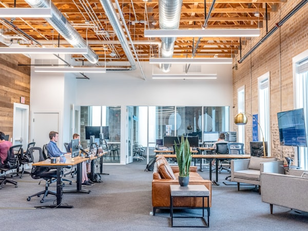
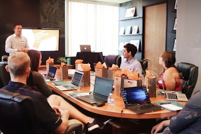

We help businesses strengthen the organisation systems, governance mechanisms, leadership alignment, and operating effectiveness required to scale execution sustainably.
We strengthen how the business operates in practice: organisation design, governance, operating effectiveness, and leadership alignment.

.png)

Translating strategy into the organisational capabilities the business must build, and the operating model that delivers them at scale. Applied at strategy refreshes, new market entry, business model shifts, and the growth inflections where what worked before no longer fits what’s next.
Structures, leadership roles, and accountability mechanisms that support coordination, clarity, and effectiveness. Leadership team redesign, new business unit creation, role overlap resolution, and the structural shifts that come with scale, integration, or stage transition.
Governance forums, operating cadence, management processes, metrics, and decision effectiveness — geared to execution at scale. For slow decisions, unclear decision rights, cross-functional friction, and governance that has not kept pace with the business.
The talent practices and capability-building systems that sustain performance as the organisation grows and grows more complex. Talent systems, performance architecture, and the HR functional capabilities that turn individual capability into institutional strength.
Leadership alignment, stakeholder engagement, and organisational change adoption through growth, transformation, and change. Large-scale restructures, post-acquisition integration, and new operating-model rollouts: the activation work that determines whether design becomes reality.
Translating strategy into the organisational capabilities the business must build, and the operating model that delivers them at scale. Applied at strategy refreshes, new market entry, business model shifts, and the growth inflections where what worked before no longer fits what’s next.
Structures, leadership roles, and accountability mechanisms that support coordination, clarity, and effectiveness. Leadership team redesign, new business unit creation, role overlap resolution, and the structural shifts that come with scale, integration, or stage transition.
Governance forums, operating cadence, management processes, metrics, and decision effectiveness — geared to execution at scale. For slow decisions, unclear decision rights, cross-functional friction, and governance that has not kept pace with the business.
The talent practices and capability-building systems that sustain performance as the organisation grows and grows more complex. Talent systems, performance architecture, and the HR functional capabilities that turn individual capability into institutional strength.
Leadership alignment, stakeholder engagement, and organisational change adoption through growth, transformation, and change. Large-scale restructures, post-acquisition integration, and new operating-model rollouts: the activation work that determines whether design becomes reality.
We begin by aligning on strategy and growth priorities. Rather than jumping into structures, we define the critical capabilities the strategy needs, isolating what is actually constraining execution.
With priorities clear, we shape the macro operating model. We establish reporting lines, design key governance forums, define decision rights, and configure critical interfaces between functions.

We translate the macro design into exact operating details: team structures, role charters, individual decision boundaries, metrics, and standard operating interfaces.

A design only delivers value when it is adopted. We support implementation through change planning, leadership alignment, transition paths, and capability building to embed the new model.
Our proprietary diagnostic. It examines how the whole organisation works in practice: the operating model, governance, leadership, accountability, and the systems that carry execution. It isolates where performance is actually being lost.
What you get: One evidence-based view of where the organisation is strong, where it’s exposed, and the few changes that will move performance most, so leadership can act on clear priorities rather than broad or unnecessary redesign.
For PE funds and portfolio companies, it runs as the Execution Risk Diagnostic, calibrated to deal pace.

A 2-day immersive that meets your work where it is.
Hands-on programme for senior teams.
Short on slides, long on doing.
.jpeg)

Shaped around a redesign already underway, so frameworks meet your real trade-offs in real time.

Industry-specific simulation drawn from patterns in your sector and stage, when there is no live project to anchor to.
A selection of engagements, the kind of organisational challenges we work on. Each links to its full case study.
Redesigning the operating model of a consumer business to strengthen cash flow and scale e-commerce profitably.
Read more
A regional food solutions provider, serving aviation and commercial clients, rethinking its organisation model following significant disruption.
Read more
A leading Southeast Asia-based grocery, health & beauty retailer designing a future-ready enterprise operating model.
Read moreA leading Asia-Pacific life sciences company designing a digital operating model for greater coherence across the business.
Read moreA leading regional bank redesigning its HR operating model to align with a refreshed enterprise strategy and shifting workforce.
Read moreStrategic rigour with practical implementation, solving real organisational challenges without unnecessary complexity.